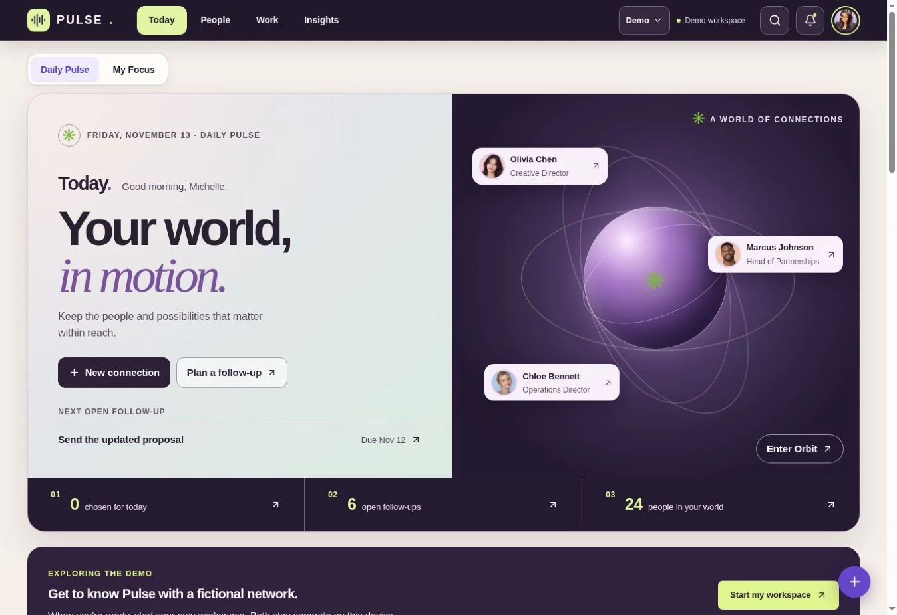

01 / Relationship managementLive web app
PULSE
Keep the people and the next step together.
A local-first relationship CRM for people, conversations, follow-ups, and opportunities. A daily workspace and visual Orbit make the context behind a connection easier to find.
Behind the project
- The need
- Relationship context gets scattered across messages, spreadsheets, and memory.
- My work
- A connected product experience for contact records, activity, tasks, pipeline, and relationship insights.
- Explore it
- Choose Explore Demo, meet the fictional network, then open a person or enter Orbit.